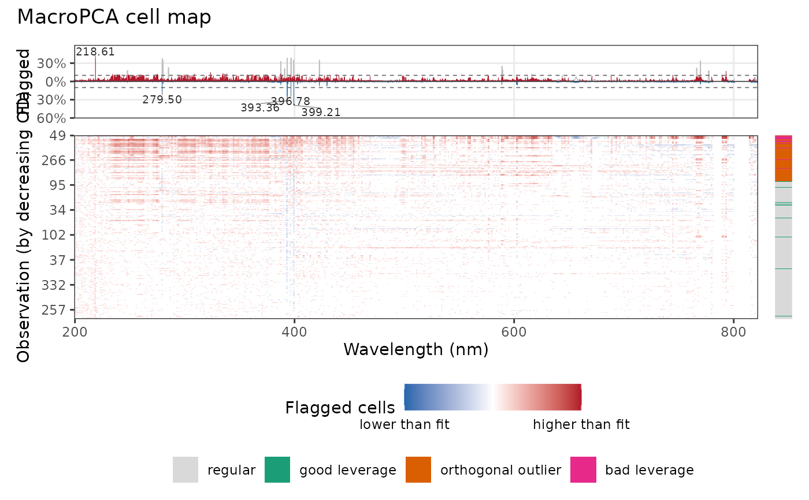

Shows which cells of the data deviate from a macropca() fit: one row
per observation, the variables (wavelengths) along the horizontal axis,
and the flagged cells colored red when the observed value is higher than
the fit and blue when it is lower. A strip on the right shows the outlier
type of each observation, and a panel on top the share of flagged cells
at each wavelength over the mean spectrum, with the most flagged regions
labeled, which shows which emission lines hold the cellwise outliers.
Arguments
- object
An object returned by
macropca().- rows, columns
Optional indices or names of the rows and columns to show. Default is all.
- resolution
The maximum numbers of rows and columns of blocks. Default is
c(200, 400).- order
The order of the rows:
"data"(default),"od"for decreasing orthogonal distance, which puts the most outlying observations at the top, or"cluster"to group the observations with similar flagged cells.- profile
If
TRUE(default), add the panel of the share of flagged cells by variable.- spectra
Optional spectra whose mean is drawn behind the profile (a data frame or matrix with the variables of the model, other columns being ignored, or a single named spectrum). Default is the data imputed by MacroPCA.
- threshold
The share of flagged observations above which channels form a flagged region. Default is 0.1.
- labels
The number of flagged regions labeled in the profile. Default is 5; use 0 for none.
- lines
Optional line list returned by
libs_lines(), to label the regions with the emission lines they match.- tol
The largest distance, in nm, between a region and a line it matches. Default is 0.1.
- title
The plot title.
Details
Resolution. Spectra have many more cells than a plot has pixels, so
adjacent cells are combined into blocks: the numbers of rows and columns
of blocks are at most resolution, and a map smaller than that shows
every cell. Channels are combined only within a detector segment, and the
gaps between segments stay empty. The map fills the plot area, whatever
the numbers of observations and variables.
Colors. A flagged cell with standardized residual \(r\) has an intensity that grows with \(\log(|r|/c)\), from 0.25 at the flagging cut-off \(c\) to 1 at \(10c\) and beyond. The color of a block is the mean of these signed intensities over its cells (0 for cells that are not flagged), on a square-root scale so that blocks with a few flagged cells remain visible: pale blocks have few or mixed flagged cells, saturated blocks many cells that deviate strongly in the same direction.
Order. With order = "cluster", the observations are sorted by a
hierarchical clustering (Ward's method) of their flagged cells, at the
column resolution of the map, so that observations that deviate in the
same regions form bands (for example, a batch or a type of matrix).
Profile. The top panel shows, for each variable, the share of the
(shown) observations whose cell is flagged: above zero when higher than
the fit, below zero when lower. The mean spectrum is drawn in grey
behind it, rescaled, to show whether the flagged channels are on emission
lines, on the continuum or in noise. It is the mean of spectra or, by
default, of the data imputed by MacroPCA; it is left out when this mean
is close to zero, as for centered data (then give the raw spectra in
spectra). The dashed lines are at threshold, and the labels flagged
regions with the largest share (see flagged_regions()) are labeled with
their peak wavelength, or with the emission line they match.
Examples
# \donttest{
minerals <- c("Ca", "Cl", "Cu", "Fe", "Mg", "Mn", "Mo", "P", "K", "Na", "S", "Zn")
set.seed(1)
fit <- forageLIBS |>
dplyr::select(-Measurement, -Sample, -dplyr::all_of(minerals)) |>
macropca(k = 3)
if (requireNamespace("patchwork", quietly = TRUE)) {
plot_cell_map(fit, order = "cluster")
plot_cell_map(fit, order = "od")
}

# }